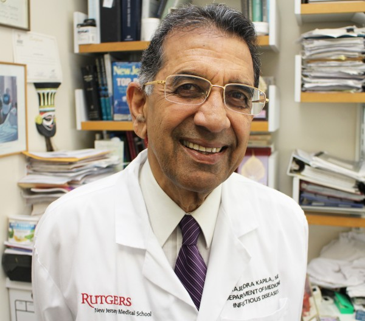
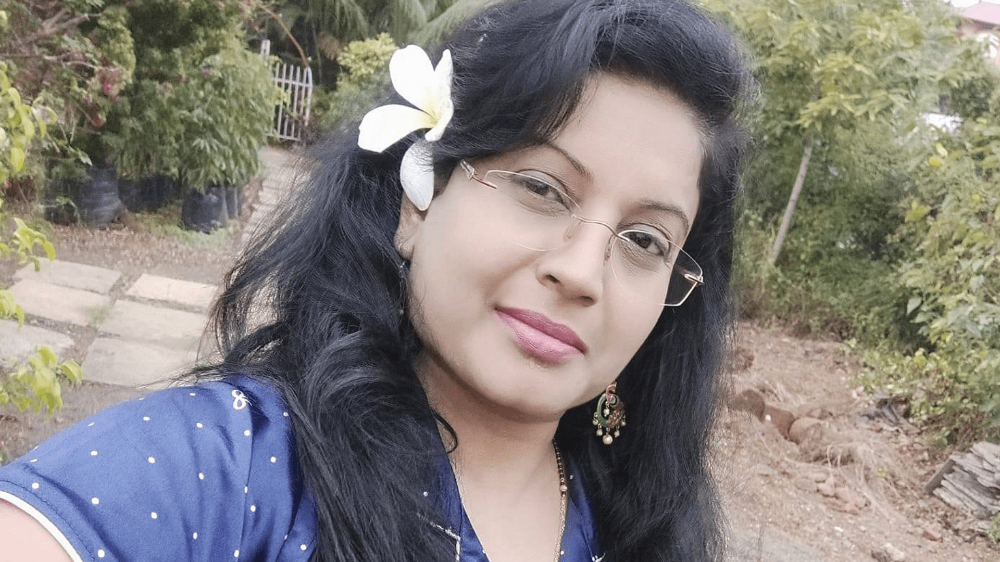

Meet The Frontline Heroes India Lost In The Fight Against COVID-19
According to Indian Medical Association as on 30 June 2021, 798 doctors died during the second wave of Covid-19 across the country of which maximum 128 doctors lost their lives in Delhi, followed by Bihar at 115.As per the official note by the IMA, the number of doctors who lost their lives in the pandemic in Delhi stands at 128, followed by Bihar at 115 and Uttar Pradesh at 79.States like Maharashtra and Kerala where the prevalence of the Delta Plus variant of Covid-19 is on a rise also reported deaths of doctors in double digits. Maharashtra reported 23 doctor deaths and Kerala reported 24 deaths.Pondicherry reported the lowest deaths of doctors by logging one death only.
Brave Warriors
Dr KK Aggarwal
Dr KK Aggarwal echoed the spirit of many healthcare workers across the country who have been working relentlessly and selflessly to treat, educate and vaccinate people against COVID-19 that has so far claimed close to 4 lakh lives (3.99
lakh as on July 1).During his career, Aggarwal served as the Honorary Secretary General of the Indian Medical Association (IMA), Chairman of the IMA Academy of Medical Specialties, National Honorary Finance Secretary of the IMA, director
of the IMA's AKN Sinha Institute, president of the Delhi Medical Association, President of the IMA's New Delhi branch and chairman of the International Medical Sciences Academy's Delhi chapter. He taught at the Delhi Institute of Pharmaceutical
Sciences and Research as a visiting professor.He was the national president of the Indian Medical Association and chief editor of IJCP Group.He was appointed the president of Confederation of Medical Association of Asia and Oceania
(CMAAO) in September 2019. He also served as the Vice Chairman of World Fellowship of Religion.
Dr Jagadish Rai
In October, 70-year-old, Dr Jagadish Rai, an obstetrician and a general practitioner working in a small town in coastal Karnataka for the last 40 years, contracted COVID-19 in the line of duty and succumbed to the disease, setting another example of the selfless service that doctors and other healthcare workers offer. Despite being a senior citizen and having underlying leukemia, Dr Jagadish Rai continued to work six and a half days a week even during a pandemic. Dr Rai had his own clinic and was associated with a nursing home close by. He was not posted on COVID duty per se officially but continued seeing patients in his private practice, many of whom were COVID positive, who were denied medical attention elsewhere.
Anas Mujahid
26-year-old, Anas Mujahid, a junior Resident Doctor at Delhi’s COVID dedicated Guru Teg Bahadur Hospital is another COVID warrior India lost during the second wave of the COVID-19 pandemic. Dr Mujahid had minor symptoms like sore throat and tested positive in an antigen test at the hospital. In a rare case of sudden progression, he collapsed soon after and died due to intracranial bleeding. He is survived by his parents and four siblings.Mujahid was known to be hardworking, the most humble and helpful person among his colleagues and juniors at the University College of Medical Sciences (UCMS) at GTB hospital.
Dr Rajendra Kapila
Renowned infectious disease specialist and Rutgers University professor Dr Rajendra Kapila passed away in Delhi on April 28 after having tested positive for Covid-19 on April 8. He was 81. Dr Kapila worked extensively on HIV-AIDS, trained many people in the field and practised at the Rutgers University for 50 years. He had returned to India with wife Dr Deepti Saxena-Kapila in the last week of March and stayed in Ghaziabad. He was supposed to fly back to US by second week of April but was admitted to Delhi’s Shanti Mukund Hospital where he died.
Dr Manisha Jadhav
A 51-year-old senior medical officer from Sewri TB hospital died of Covid-19, around 36 hours after posting her parting words on Facebook.Dr Manisha Jadhav, fondly remembered for her efficient juggling of clinical and administrative roles, became the first doctor from the civic health setup to die of the infection. According to the Indian Medical Association, nearly 18,000 doctors have contracted Covid and 168 have died in the state since last March, but few have been adequately compensated.
Dr Pradeep Tara
After a two-month battle against Covid, Dr Pradeep Tara, a household name in East Delhi’s Mayur Vihar, died on Friday.A general physician and chest specialist, Dr Tara set up his practice in Mayur Vihar in the 1980s, and went on to become one of the most well-known doctors in the area. He was admitted to the Indian Spinal Injuries Centre with Covid-related complications in May and died on Friday. He was in his mid-sixties.
Dr K Roji

A 23-year-old doctor in Andhra Pradesh lost her life to the Covid-19 recently. A young doctor, K Roji, who was treating Covid-19 patients at Subbamma Covid Stabilisation Centre in Sakhinetipalli in East Godavari district of Andhra Pradesh died due to the infection. After completing her MBBS at Alluri Seetha Ramaraju Academy of Medical Sciences (ASRAM) College in Eluru, Roji was serving as a house surgeon at ASRAM Hospital while perusing her MS and was actively saving the lives of those infected with the coronavirus.. Unfortunately, a few days ago, she contracted the virus and was admitted to a local hospital. She died within hours.
Dr Sakshik Shetty
Covid 19 has claimed the life of a young private doctor in Mangaluru. The deceased has been identified as Dr Sakshik Shetty, a postgraduate medical student at Srinivas Institute of Medical Sciences & Research Centre The 27 year old student, hailing from Hardal in Kundapur taluk of Udupi district, had joined the course recently. He was a first year onstgraduate student insurgery, sources said. His parents are settled in Mudigere in Chikkamagaluru district. His last rites will be held at Mudigere A source from the medical college said that the doctor was not on Covid 19 duty, He had joined the postgraduate course on a government quota, a few days ago. Though he was diagnosed with Corld 19, he was fine, and was undergoing treatment in the ward
Dr G Naresh Kumar
Dr G Naresh Kumar, worked in the Bhadrachalam division as the District Immunisation Officer and was actively involved in Covid-19 mitigation strategies. He was also in charge of a quarantine centre at Manuguru.The 35-year-old was put on ventilator support and died of cardiac arrest and pulmonary thromboendarterectomy (PTE). The youngest of the doctors to die of Covid-19, Dr Kumar is survived by his wife and two daughters.
Dr S Padmavati
Cardiologist Dr S Padmavati has died at 103 due to COVID-19, the National Heart Institute said . She was undergoing treatment at NHI for past 11 days, doctors said. “Dr S Padmavati, an eminent cardiologist, rather the first female cardiologist of India, popularly known as ”God Mother of Cardiology” passed away on August 29 due to COVID-19 infection,” the NHI said in a statement. Founder of NHI, she was born in Burma (now Myanmar) in 1917, a year before the world was hit by the Spanish Flu pandemic.She had migrated to India in 1942 during the World War II. She graduated from the Rangoon Medical College and went overseas for higher education.On her return to India, she joined as the faculty at the Lady Hardinge Medical College.In 1962, Dr Padmavati founded the All India Heart Foundation and went on to set up National Heart Institute in 1981 as a tertiary care modern heart hospital in Delhi with first cardiac catheterisation laboratory in the private sector in the Southern Hemisphere.